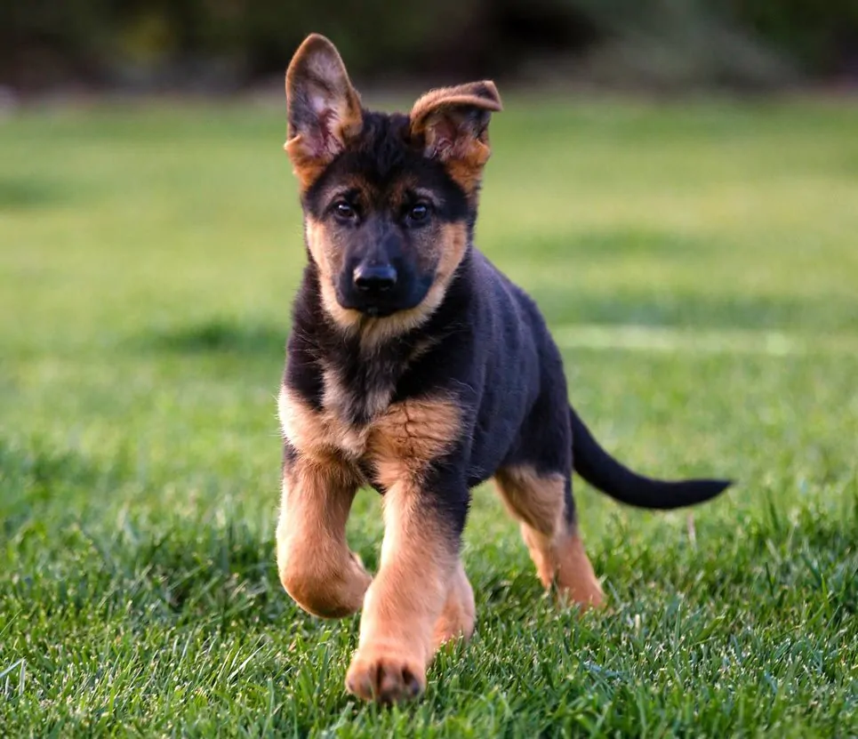
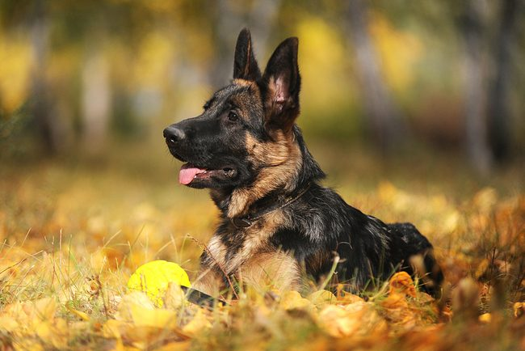

Джесіка - моя улюблена собачка. Вона дуже розумна, добра, активна, грайлива та віддана. Джесіка любить проводити час зі своєю сім'єю, гуляти на свіжому повітрі та гратися.
Вона є чудовим другом і завжди зустрічає мене з роботи веселим хвостиком.
Ім'я: Джесіка
Порода: Німецька вівчарка
Стать: дівчинка
Характер добра, розумна, активна та віддана
Улюблене заняття: прогулянки та ігри
Найкраща якість: вірність своїй сім'ї
Джесіка дуже уважна до людей та швидко навчається новому. Вона любить спілкування і завжди радіє, коли ми повертаємося додому.
Вірність
Розум
Активність
Дружелюбність
Любов


Для мене Джесіка - не просто домашня тваринка, а справжній член сім'ї та найкращий чотиролапий друг. Я дуже люблю проводити з нею час.